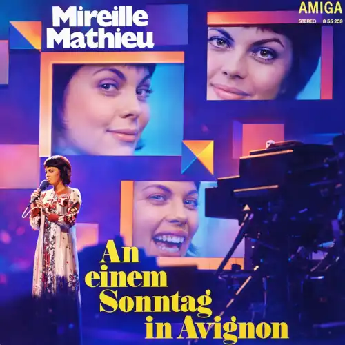

Mireille Mathieu

Die Kinder Von Montparnasse
Wände so grau und die Fenster so blind,
Tauben am Dach und die Wäsche im Wind -
Aber für Paul und Michelle und Denise
Ist dieser Hof ein Paradies
Kinder vom Montparnasse
Leben im Glück
Und sehen doch vom blauen Himmel nur ein kleines Stück
Die Kinder vom Montparnasse
Haben kein Geld,
Doch ihnen gehört die schönste Stadt der ganzen Welt
Und in der Ecke das Automobil,
Hat keine Rädere und steht immer still -
Aber für Paul und Michelle und Denise
Fährt es im Traum quer durch Paris
Kinder vom Montparnasse
Leben im Glück
Und sehen doch vom blauen Himmel nur ein kleines Stück
Die Kinder vom Montparnasse
Haben kein Geld,
Doch ihnen gehört die schönste Stadt der ganzen Welt
La la la la la la
La la la la la
La la la la la la la la la la la la la
Die Kinder vom Montparnasse
Haben kein Geld,
Doch ihnen gehört die schönste Stadt der ganzen Welt